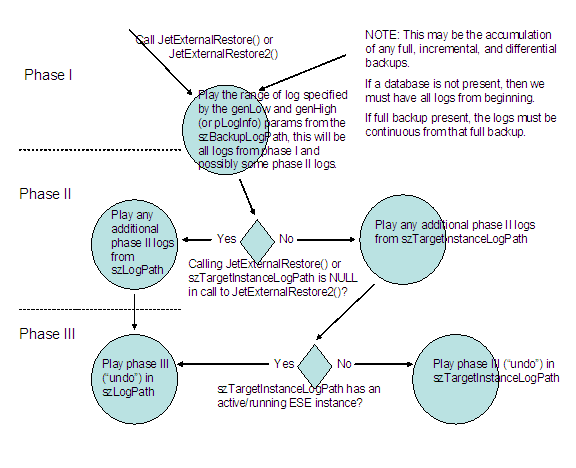

description: "Learn more about: JetExternalRestore Function" title: JetExternalRestore Function TOCTitle: JetExternalRestore Function ms:assetid: c930689a-3ea6-4c5a-9318-76f519f23343 ms:mtpsurl: https://msdn.microsoft.com/library/Gg294088(v=EXCHG.10) ms:contentKeyID: 32765703 ms.date: 04/11/2016 ms.topic: reference api_name:
Applies to: Windows | Windows Server
The JetExternalRestore function restores an external backup that was taken with the external backup APIs and specifies a range of log file numbers to replay during the restore process. This is known as hard recovery, which is similar to but different than soft recovery as performed by the JetInit function.
JET_ERR JET_API JetExternalRestore(
__in JET_PSTR szCheckpointFilePath,
__in JET_PSTR szLogPath,
__in_opt JET_RSTMAP* rgrstmap,
__in long crstfilemap,
__in JET_PSTR szBackupLogPath,
__in long genLow,
__in long genHigh,
__in JET_PFNSTATUS pfn
);
szCheckpointFilePath
The path for the checkpoint file to use during recovery if szTargetInstanceCheckpointPath is not specified or already has an active or running instance.
szLogPath
The path or directory for the logs for the final phase (undo) of recovery, and possibly for the roll forward logs. This path may be the same as the szBackupLogPath.
rgrstmap
This is an array of JET_RSTMAP structures. This is a map of old and new database paths or filenames. This is used because the databases may need to be recovered to a location other than the location they were backed up from. In the case where multiple databases are attached to a single logging set, the restore map can specify a subset of databases to restore.
crstfilemap
The number of entries in the rgrstmap array parameter.
szBackupLogPath
The path to the directory where the log files are restored. These are the logs that were read off during the external backup sequence. This path may be the same as the szLogPath.
genLow
The lowest log file number that is to be replayed from szBackupLogPath. The full fidelity of an unsigned long should be preserved, but in current versions of the engine this number is a hexadecimal number in the range from 0x00000 to 0xFFFFF. This may change in future versions.
genHigh
The highest log file number that is to be replayed from szBackupLogPath. The full fidelity of an unsigned long should be preserved, but in current versions of the engine this number is a hexadecimal number in the range from 0x00000 to 0xFFFFF. This may change in future versions.
pfn
The status callback, to report progress of the recovery.
This function returns the JET_ERR datatype with one of the following return codes. For more information about the possible ESE errors, see Extensible Storage Engine Errors and Error Handling Parameters.
| Return code | Description |
|---|---|
| JET_errSuccess | The operation completed successfully. |
| JET_errOutOfMemory | The operation failed because not enough memory could be allocated to complete it. |
| JET_errInvalidParameter | One of the parameters provided contained an unexpected value or contained a value that did not make sense when combined with the value of another parameter. This can happen for JetExternalRestore, and so on when the szTargetCheckpointPath and the szTargetInstanceLogPath are either not both specified or not both unspecified. That is, they must match, and be both specified or both unspecified. |
| JET_errDatabaseCorrupted | This indicates the database was corrupted, or an unrecognized file. |
| JET_errFileNotFound | The operation failed because it could not open the requested file because it could not be found at the specified path. |
| JET_errInvalidPath | The operation failed because the specified path could not be found. |
| JET_errRestoreOfNonBackupDatabase | This error is returned if the database file specified during restore is not a database that was backed up with external backup. |
| JET_errStartingRestoreLogTooHigh | This error is returned if one of the log files in the szBackupLogPath, has a log generation below that specified by the genLow or pLogInfo.ulGenLow. |
| JET_errEndingRestoreLogTooLow | This error is returned if one fo the log files in the szBackupLogPath, has a log generation above that specified in genHigh or pLogInfo.ulGenHigh. |
| JET_errBadRestoreTargetInstance | The szTargetInstanceLogPath specified does not belong to an initialized instance. This error will only be returned in Windows XP and later. |
| JET_errRunningInOneInstanceMode | The database engine cannot run external restore or hard recovery in single instance mode. This error will only be returned in Windows XP and later. |
On success, all databases from the rgrstmap are completely recovered and in a clean or consistent state. At this point the database can be remounted to an existing instance.
On failure, the engine could not recover the database. The database is in an invalid state, and in order to retry hard recovery the entire database must be restored again. Typically, the source of such a situation is disk or log corruption, or some other form of log mismanagement, or a non-continuous log set.
To understand how a "hard" recovery works, you must understand that there are three phases of recovery, and the second phase can have two parts. In Phase I, logs are required to bring a backed up database to consistency (or an initial set of incremental logs can be used). In Phase II, any additional roll forward logs that are available are consumed to make the database consistent. There is also a replay of the additional roll forward logs. Phase III is the undo phase of recovery.
Phase I: The replay of the set of logs that must be restored for the database to be brought to a consistent state (or an initial set of log files) is performed. Basically, this is the replay of the set of log files that are not optional for the databases being restored. If there are missing logs from this range of logs then the restore will fail. These logs should be put in the directory specified in the szBackupLogPath parameter.
Phase II: Optionally, there may be some sets of log files that are roll forward log files that come from incremental or differential backups and from the log files of an active instance. In the case of log files from incremental or differential backups, the log files can be placed in the directories specified in either the szBackupLogPath or the szTargetInstanceLogPath parameters, with the former being the recommended directory. The logs used for the roll forward phase (phase II) should come from the same series of logs played during Phase I and should have continuously incrementing log numbers with no gaps from the Phase I logs. To play a database to be fully up to date with the log files currently being used by an active instance, the szTargetInstanceLogPath and szTargetInstanceCheckpointPath parameters must be specified. This can be done even while other databases are attached to that log set.
Phase III: In the final phase of recovery, any uncommitted transactions are rolled back, which requires generating new log files and updating the checkpoint file. This phase is sometimes referred to as "undo". The checkpoint file path to use during this phase is the path analogous to the phase III log location, that is, if szLogPath is used for Phase III, szCheckpointFilePath will be used, if szTargetInstanceLogPath is used for phase III of recovery szTargetInstanceCheckpointPath will be used.
To understand how the paths work, use this flow chart:

| Requirement | Value |
|---|---|
| Client | Requires Windows Vista, Windows XP, or Windows 2000 Professional. |
| Server | Requires Windows Server 2008, Windows Server 2003, or Windows 2000 Server. |
| Header | Declared in Esent.h. |
| Library | Use ESENT.lib. |
| DLL | Requires ESENT.dll. |
| Unicode | Implemented as JetExternalRestoreW (Unicode) and JetExternalRestoreA (ANSI). |
JET_ERR
JET_PFNSTATUS
JET_RSTMAP
JET_LOGINFO
JetBeginExternalBackup
JetInit